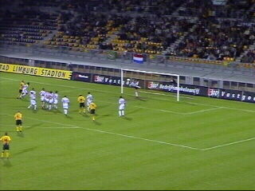
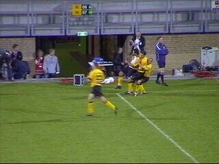

|
Roda JC - Willem II (1-0) 31 augustus 2002 |
De supporters van Willem II moedigen hun club
90 minuten lang aan!
De sfeer aan de overkant.

In de eerste helft valt er niks te beleven.
Supporter van Jerome in Z16.
Af en toe een leuk duel in een verder suffe
schaak-wedstrijd.
Mourad (ex-Den-Bosch) wordt gedekt door
Filipovic.

In de tweede helft ligt het tempo iets hoger maar
kwalitatief blijft de wedstrijd matig.
Hier een mooie redding van De Vlieger.
Vicelich kwam niet in actie, maar een van zijn
grootste fans heeft toch een vlag van N.-Zeeland
voor hem opgehangen.
Moeilijk te zien, maar hier had Roda een penalty
moeten krijgen.
Vrije trap genomen door Anastasiou.

Het schot wordt van richting veranderd en zeilt
in het doel. 1-0 (87).

Alweer scoort Roda in de slotfase!
Bijna wordt het 2-0, maar Berglunds missie op
de
verlaten post van De Vlieger mist doel.
De vreugde om de 3 punten wedijvert met de
triestheid van het vertoonde spel.
In de omloop sluiten de Martinairbaby's al om
22.00 uur. In de Kick-Off waar het merendeel
van de hardcore-supporters zich niet meer laat
zien is het een dode bedoening. Vandenbroek
en Filipovic komen een kijkje nemen in een
vrijwel verlaten home.
Op noord is er ook niks meer te beleven want
Roda's
wandelende database + supercop Rein past goed op
de winkel.
©
Koempels
Pleasure Dome